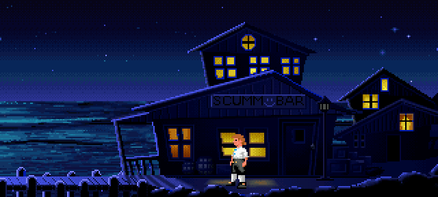
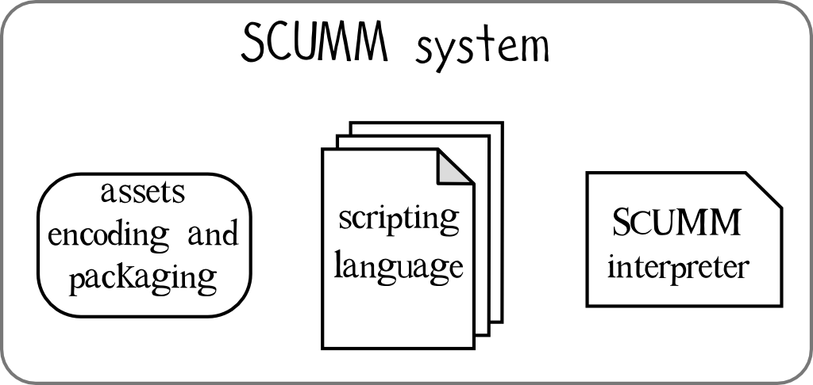
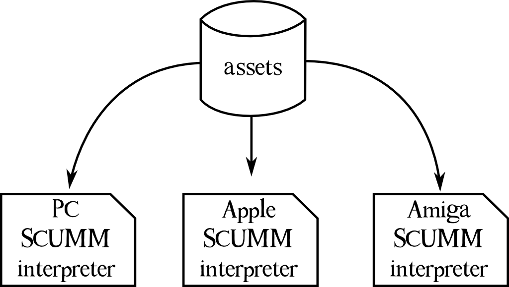

Graphic adventure videogames are extraordinary multimedial pieces of art.
Born as the natural evolution of textual adventures of the early 80', graphic adventures enclose all the features of a movie: plot, dialogues, characters, images, animations, soundtrack, sound and visual effects.
In addition to movies, graphic adventures are interactive: the player is the protagonist.
My youth as been deeply influenced by LucasArts graphical adventures: these games really shaped in me the concept of videogame entertainment!
SCUMM
Technically speaking, if we try to put ourself in an adventure games developer's shoes for a moment, we will notice soon how many data (assets) we must deal with: we have audio files for the soundtrack, we have sound effects and sometimes also voice recordings, we have a lot of images, one for each single frame of characters animations but also images for the background art and the objects the player could interact with during the game.
Futhermore we have dialogue text strings, we have code scripts which the behaviour of the actors depends on, gameplay mechanics, decisional trees, whose structure can modify the story flow depending on the player actions, and a lot more...
Back to the early LucasArts years (still LucasFilm games at that time), the greatest problem in developing such a game could have been mainly caused by the fact it would have taken years to write the game code using only the assembly language.
They needed some kind of tool to make this process quicker and easier for developers and content creators to use and, eventually, this tool was soon created from scratch.
Since Maniac Mansion, their first adventure game, LucasArts developers started to use SCUMM[1] (Script Creation Utility for Maniac Mansion) a special programming language and toolbox particularly designed for this kind of videogames.

Thanks to SCUMM, programmers would have been able to manipulate the huge amount of game assets in a relatively easy way, taking benefit from a series of ad-hoc pre-packaged functions, writing more compact and human-readible scripts, without troubling themself with countless lines af low level code.
The term SCUMM can also be extended to the way assets were encoded and packed together on large "container files", inside of which the game scripts were also stored (game scripts can be considered as assets too!)
Then, those "container files" were read and decoded by a special computer program in order to eventually run the actual game! This program was the SCUMM interpreter (later it was given the name SPUTM which stands for SCUMM Presetation Utility (tm) [2]).

Indeed it was a veritable virtual machine (process virtual machines) designed to run a single computer program - the game itself - giving it an abstract execution enviroment, indipendent from the underlying platform.
With game interpreters it was eventually possible to keep assets separated from the game implementation details whose were strictly dependent on the hardware and different from platform to platform (Commodore, Pc o Apple for example).

With the passing of time and the emergence of new systems and devices, these games could no longer be played because their interpreters were no longer up to date to adapt to the hardware features of modern machines.
And here's the ScummVM team!
ScummVM
The idea which is the base of the ScummVM developers work is simple: build new SCUMM interpreters[3][4]!
As today (July 2017), after 15 years of development[5], the ScummVM project makes it possible to run these games on a myriad of platforms such as Windows, Linux, Mac, PlayStation3, iOS, Android, Dreamcast, Tizen, Amiga OS, SamsungTV only to name a few.
Futhermore, even if the core of the project were initially focoused on LucasArts SCUMM games solely, as ScummVM name suggests, now ScummVM is huge and integrates a lot of game interpreters from other good-old-days software houses like Sierra, Revolution Software, Activision, Coktel Vision and more, and it is growing every day.
ScummVM exists thanks to the collaboration of hundreds of developers and adventure games enthusiasts. As said before and shown on the following video, the project contains the code of a huge amount of different game interpreters of the "graphical adventure" game genre. ScummVM also contains code from other software projects which were born indipendently like the Munt project[6], used to emulate the Roland MT-32 sound card and its typical sounds.
We must consider that at the very heart of the ScummVM project there is even a greater work: the retro-engineering which took place on the binary files of the original games! This was necessary (and it still is indeed) because software houses never released the source codes of their games.
Fortunately there are some exceptions, as the case of Revolution Software which gave free access to their games source codes such as Lure of the Temptress and Beneath a Steel Sky, saving ScummVM developers from the umpteenth headache and, at the same time, garanteeing a brand new life to these games!
The same was for Adventure Soft and other software houses which, in this sharing spirit, released freeware versions of their games that are now downloadable from the ScummVM project website directly[7].
As an example of the great quality of the project and of the ScummVM developers cautious care for details, lies in the fact they have included codes to even solve bugs from games in their original version[8]! Free software is the leitmotif of the ScummVM project: another great note is that ScummVM is free software, all project source code is freely available and distributed with a GPL license.
In short... hats off and long live to ScummVM!
and then...
ScummVM is certantly not the only project thanks to which it is possible to play again our old videogames or programs. Among all other options I think that DOSBox project is noteworthy here[9][10].
With DOSBox we are always talking about a virtual machine even if it is a System virtual machine instead of a Process virtual machine. An emulation of a complete system therefore: an IBM PC compatible machine running a DOS operating system, with emulation of graphic peripherals and IBM compatible sound card.
This means that old programs (not just games) are provided an environment where they can work properly, unaware to run on top of a modern device!
The DOSBox project is a little younger than ScummVM (the first release for DOSBox dates back to June 2002 while the ScummVM one in October 2001) and, just like ScummVM, this is free software, licensed under the GNU GPL.
Other References
An interesting talk by Ron Gilbert at Game Forum Germany 2011. Here Gilbert talks about Maniac Mansion and about SCUMM engine origin, with some curiosity;
SCUMM engine page taken directly from the ScummVM Wiki;